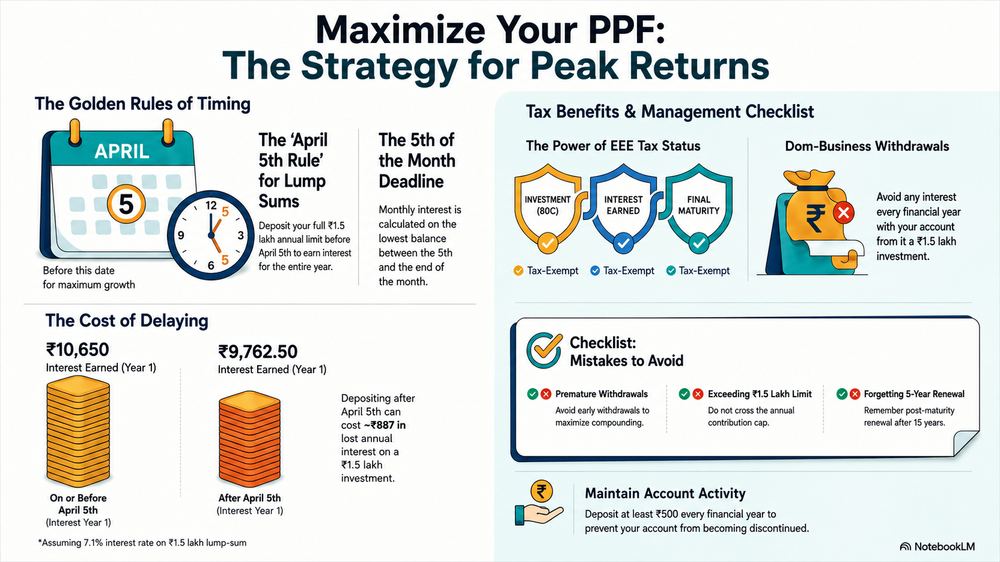

PPF 5th of the Month Rule: How Interest & Timing Work

Understanding how Public Provident Fund (PPF) interest is calculated can help you time deposits more thoughtfully and avoid common account mistakes. While PPF is widely known as a long-term savings option in India, small timing and rule details make a practical difference over the years.
1. How the 5th-of-the-Month Rule Works for PPF Interest
PPF interest is calculated on the lowest balance in your account between the 5th and the last day of each month (with rules and interest rates set periodically by the government).
- Depositing on or before the 5th: If your deposit is credited on or before the 5th of the month, that amount is included in that month's eligible balance calculation.
- Depositing after the 5th: If a deposit lands after the 5th, it misses that month's interest calculation and only begins counting from the next eligible cycle.
- Starting Early in the Financial Year: Beginning contributions early in April rather than waiting until the end of the financial year gives your money more months to compound.
2. Lump Sum vs. Monthly Contributions
You do not need a large lump sum all at once to follow a disciplined routine:
- Annual / Early-Year Lump Sum: If you plan to invest a lump sum for the year, depositing early in the financial year—on or before the 5th—maximizes the months it can earn interest.
- Monthly Deposits: If monthly contributions fit your cash flow better, aiming for on or before the 5th each month (such as through automated transfers) helps avoid missing months simply due to a late transfer.
3. Common PPF Mistakes to Avoid
Even long-term savers run into preventable snags with PPF accounts:
- Irregular or Missed Contributions: Skipping deposits breaks steady habit-building and slows compounding over time.
- Exceeding the Annual Cap: Annual PPF contributions have a statutory maximum limit (commonly ₹1.5 lakh per financial year under current rules); contributing above the limit does not earn extra interest or tax deduction and may require refund/adjustment.
- Forgetting Nominations: Keeping nominations updated—and reviewing them after major family changes—helps avoid administrative hurdles for loved ones.
- Missing Maturity or Extension Choices: PPF has a standard 15-year tenure and can typically be extended in 5-year blocks; knowing your options before maturity keeps your plan intentional.
- Early / Partial Withdrawals Without a Clear Plan: Treating long-term savings as casual cash reduces its long-term compounding effect.
4. Understanding EEE Tax Treatment and Rules
PPF is often discussed for its Exempt-Exempt-Exempt (EEE) tax status under applicable Indian tax laws—meaning contributions (subject to applicable limits/regimes), interest earned, and maturity proceeds can be tax-exempt—though tax rules and slabs can change over time. Always verify current rules or speak with a Chartered Accountant or SEBI-registered professional before making major tax or investment decisions.
Want structured frameworks and checklists to organize your goals and learning? Explore WENA Programs, browse practical tools in the WENA Store, or connect with vetted specialists via WENA Implementation Partners.